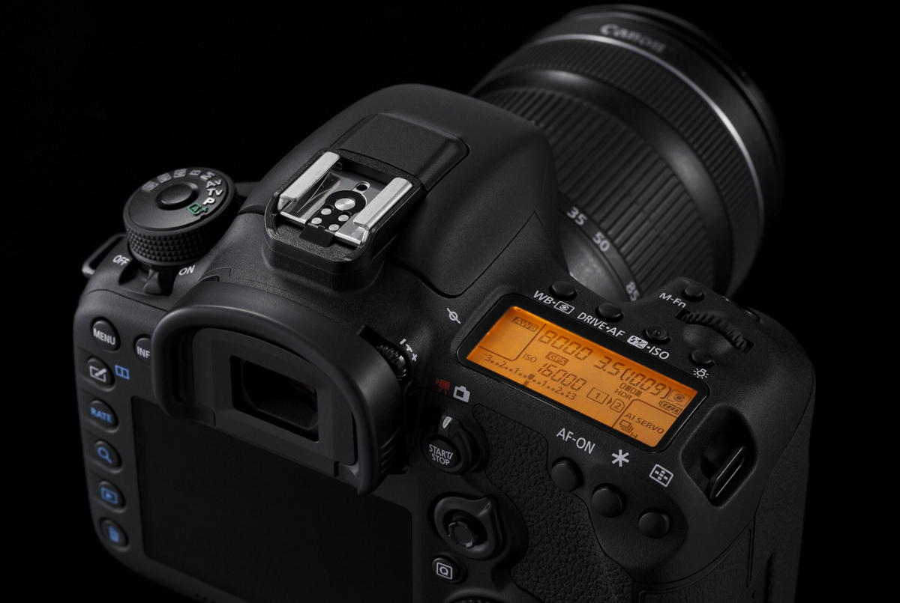
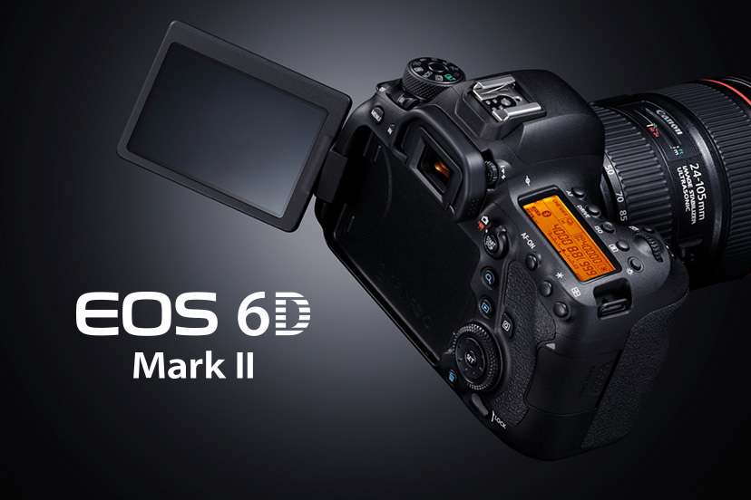
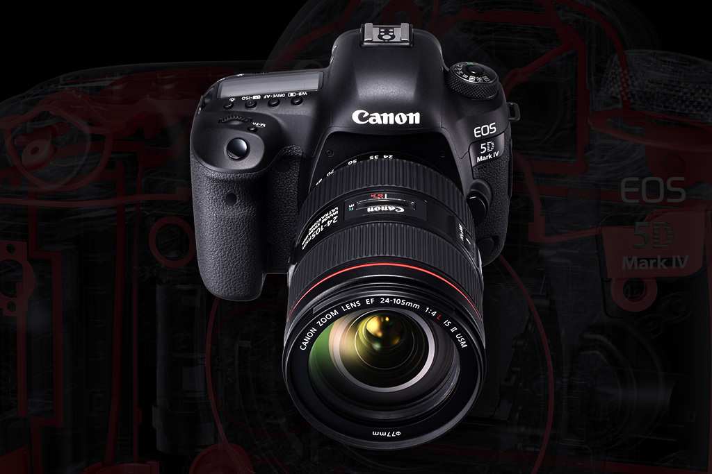

SFESIFIKASI KAMERA CANNON
BERIKUT ADALAH SFESIFIKASI KAMERA CANNON

sfesifikasi kamera cannon EOS 7D Mark II :
Salah satunya ialah kemampuan untuk mengenali titik fokus tipe cross hingga 65 buah,
kamera ini juga memiliki kemampuan untuk bisa menangkap objek pada kecepatan 10 fps dalam sekali jepretan dan shutternya bisa ditekanlebih lama hingga mencapai 200.000 jepretan.

sfesifikasi kamera cannon Canon EOS 6D Mark II :
Canon telah mengusung EOS 6D Mark II sebagai kamera DSLR terbaik paling ringan yang ada di kelasnya.
Selain diotaki dengan prosesor DIGIC 7, kamera ini juga hadir dengan sensor CMOS 26.2 MP Full Frame.

sfesifikasi kamera cannon Canon EOS 5DS :
Dengan kemampuan resolusi yang dimilikinya yakni 50,5 megapiksel,
kamera DSLR EOS 5DS ini menjadi salah satu kamera populer dikalangan para fotografer profesional.
Back